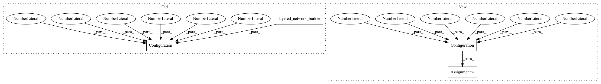

ac04dcf9ced65fdd2cafc5c967400cabf32d3c6a,tensorforce/tests/test_quickstart_example.py,TestQuickstartExample,test_example,#TestQuickstartExample#,34
Before Change
env = OpenAIGym("CartPole-v0")
// Create a Trust Region Policy Optimization agent
agent = PPOAgent(config=Configuration(
log_level="info",
batch_size=4096,
gae_lambda=0.97,
learning_rate=0.001,
entropy_penalty=0.01,
epochs=5,
optimizer_batch_size=512,
loss_clipping=0.2,
states=env.states,
actions=env.actions,
network=layered_network_builder([
dict(type="dense", size=32, activation="tanh"),
dict(type="dense", size=32, activation="tanh")
])
))
runner = Runner(agent=agent, environment=env)
def episode_finished(r):
After Change
for _ in xrange(3):
// Create an OpenAIgym environment
env = OpenAIGym("CartPole-v0")
config = Configuration(
batch_size=4096,
// Agent
preprocessing=None,
exploration=None,
reward_preprocessing=None,
// BatchAgent
keep_last_timestep=True, // not documented!
// PPOAgent
step_optimizer=dict(
type="adam",
learning_rate=1e-3
),
optimization_steps=10,
// Model
scope="ppo",
discount=0.99,
// DistributionModel
distributions=None, // not documented!!!
entropy_regularization=0.01,
// PGModel
baseline_mode=None,
baseline=None,
baseline_optimizer=None,
gae_lambda=None,
normalize_rewards=False,
// PGLRModel
likelihood_ratio_clipping=0.2,
// Logging
log_level="info",
// TensorFlow Summaries
summary_logdir=None,
summary_labels=["total-loss"],
summary_frequency=1,
// Distributed
distributed=False,
device=None
)
network_spec = [
dict(type="dense", size=32, activation="tanh"),
dict(type="dense", size=32, activation="tanh")
]
// Create a Trust Region Policy Optimization agent
agent = PPOAgent(
states_spec=env.states,
actions_spec=env.actions,
network_spec=network_spec,
config=config
)
runner = Runner(agent=agent, environment=env)
def episode_finished(r):
// Test if mean reward over 50 should ensure that learning took off
In pattern: SUPERPATTERN
Frequency: 3
Non-data size: 4
Instances
Project Name: reinforceio/tensorforce
Commit Name: ac04dcf9ced65fdd2cafc5c967400cabf32d3c6a
Time: 2017-10-15
Author: mi.schaarschmidt@gmail.com
File Name: tensorforce/tests/test_quickstart_example.py
Class Name: TestQuickstartExample
Method Name: test_example
Project Name: reinforceio/tensorforce
Commit Name: e46c1ded997580101e5a5dd3ef0e6501e82f59af
Time: 2017-10-16
Author: mi.schaarschmidt@gmail.com
File Name: tensorforce/tests/test_tutorial_code.py
Class Name: TestTutorialCode
Method Name: test_blogpost_introduction_runner
Project Name: reinforceio/tensorforce
Commit Name: 863b8dee69df21ff479b0f28422f2bf2b14f05bd
Time: 2017-10-15
Author: mi.schaarschmidt@gmail.com
File Name: examples/quickstart.py
Class Name:
Method Name: